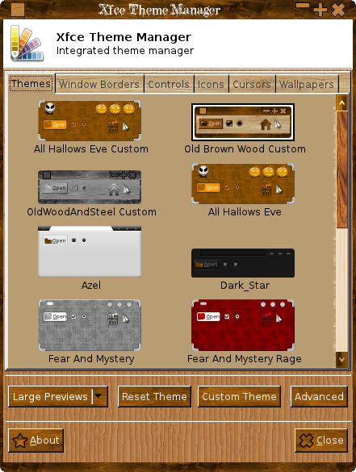
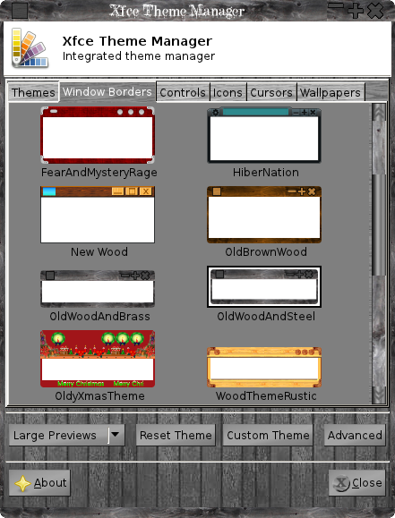
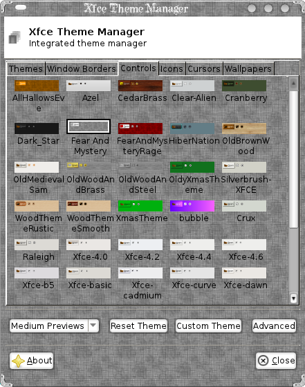
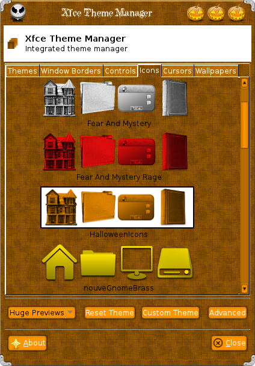
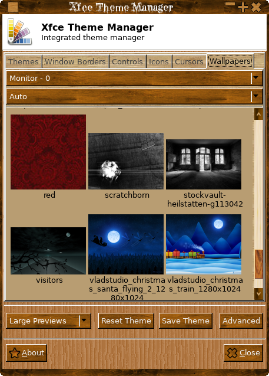
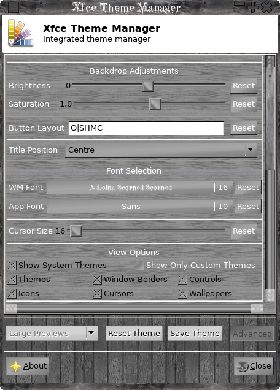
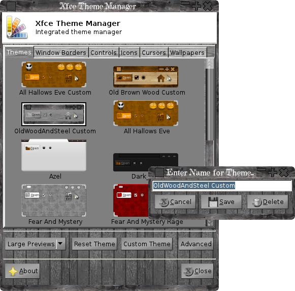

CliMsg
FBPic
Xfce4-Composite-Editor
Xfce4-Theme-Manager
KKEdit
( The gtk versions are no longer under active development, please use the QT version which is ).
KKEditQT
KKTerminal
QtSu
YadQt
Bash Compiler
LprGui
ManPageEditor
ASpell GUI
Clipboard Viewer
XDecorations
Back To Software
Climsg
Climsg is a simple inter-process communication program, mostly designed for scripts that don't usually have such a thing.
Messages can be sent, received, repeated or flushed from the queue, the message system is handled by the kernel, so any modern kernel should be fine, if you have compiled your own kernel you may have to 'opt in' the message system.
Messages can use the default 'key' or can specify a custom 'key' allowing for semi-private communications, also message 'types' can be used, a type is any integer > 0, only messages of the correct type will be peeled of from the queue and printed to stdout, type 0 is a special case and is use to receive any message regardless of 'type' of course the 'key' must match as well.
Because the messages are handled by the kernel, messages can be passed to and received back from a chroot environment.
Queues are FIFO and LOCAL only.
A simple demo script is included in the source package.
To install just extract the source CD into it an do make;sudo make install.
Download CLIMsg
Back To Top
FBPic
A simple command line
application to display a ppm image on the linux console.
To install repeat the linux mantra "make;sudo make install"
Simple one line console slideshow, change "scale" to your frame buffer resolution:
setterm -cursor off;find /path/to/pics/*.jpg|while read;do convert -scale 1024x768! ppm:-|fbpic;sleep 2;done;setterm -cursor on
To install repeat the linux mantra "make;sudo make install"
To display the image
/fancyboot/images/main.ppm on the console:
cat /fancyboot/images/main.ppm|fbpic
To scale and display a jpg on the console via Imagemagik:
convert /fancyboot/images/ntpd.png -scale 1024x768! ppm:-|fbpic
cat /fancyboot/images/main.ppm|fbpic
To scale and display a jpg on the console via Imagemagik:
convert /fancyboot/images/ntpd.png -scale 1024x768! ppm:-|fbpic
Simple one line console slideshow, change "scale" to your frame buffer resolution:
setterm -cursor off;find /path/to/pics/*.jpg|while read;do convert -scale 1024x768! ppm:-|fbpic;sleep 2;done;setterm -cursor on
Download FBPic source
Back To Top
Xfce4-Composite-Editor
I wrote this simple GUI to control the various Xfce4
WM tweaks that are not available via the "Window Manager
Tweaks" control panel.
These settings are available via the xconf settings editor but that is one of the most awkward GUI's I have ever used as you have to select the xfwm4 channel, expand the tree, scroll to the option you want, select it, click edit, change the setting and click save, then the tree gets collapsed and you have to start again!
So this nice simple GUI to control the composite manager, the settings are self explanatory.
This is an updated version and all controls are now 'Live', but should you need to you can restart Xfwm4 manually, this version no longer needs gtkdialog as its a 'proper' c application.
These settings are available via the xconf settings editor but that is one of the most awkward GUI's I have ever used as you have to select the xfwm4 channel, expand the tree, scroll to the option you want, select it, click edit, change the setting and click save, then the tree gets collapsed and you have to start again!
So this nice simple GUI to control the composite manager, the settings are self explanatory.
This is an updated version and all controls are now 'Live', but should you need to you can restart Xfwm4 manually, this version no longer needs gtkdialog as its a 'proper' c application.
DEPENDENCIES:
gtk+-2.0 >= 2.24.0
libxfce4ui-1 >= 4.8.0
libxfconf-0 >= 4.8.1
INSTALL:
(The linux mantra:)
./configure
make
sudo make install
gtk+-2.0 >= 2.24.0
libxfce4ui-1 >= 4.8.0
libxfconf-0 >= 4.8.1
INSTALL:
(The linux mantra:)
./configure
make
sudo make install
{kind=link}
Download Xfce4-Composite-Editor
Back To Top
Xfce-Theme-Manager
Having switched to Xfce from gnome one of the main annoyances I have found is having multiple settings GUI's for setting the theme, one for the window border and one for the controls/icons and neither include thumbnails!
As I like to switch themes and mix and match this soon became VERY irritating hence this application, as you can see from the screenshots only one GUI is used to set all the bits of a theme, the "Themes" tab contains themes that have an integrated window border/control theme ( and if there is a gnome-like theme.index file that specifies an icon set this will be used as well ), everything is fairly self explanatory, just click on a thumbnail to set a particular theme/window border/control/icon set.
Full installation/usage is in the README file in the archive.
Xfce4-Theme-Manager Full Details
Meta theme tab

Window border tab

Controls tab

Icons tab

Cursors tab

Wallpapers tab

Advanced


Custom Theme Dialog

Download Xfce-Theme-Manager-0.3.7
Old Versions
To be continued ...
Back To Top
Back To Software